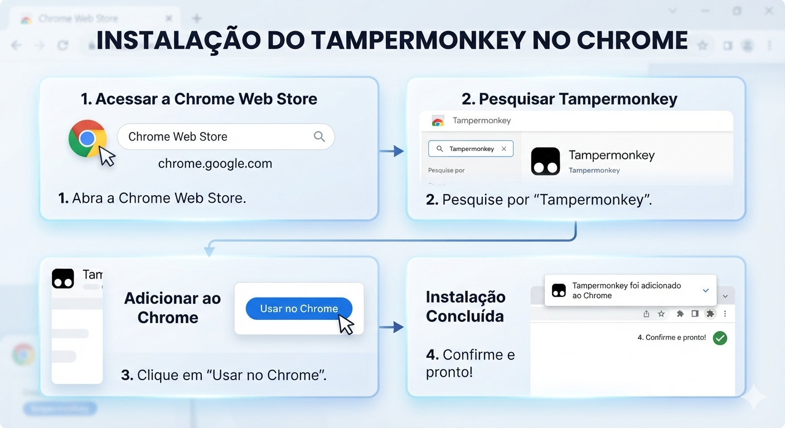
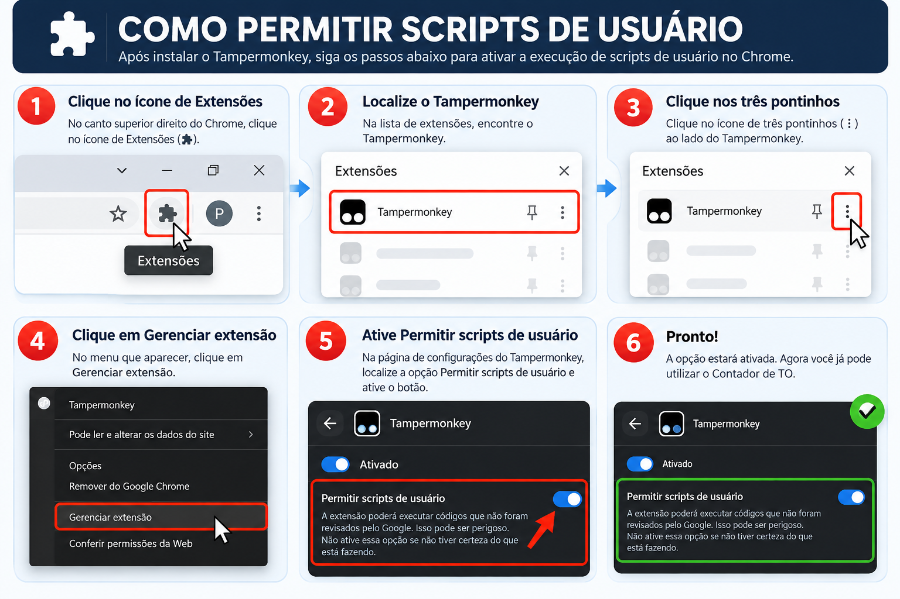
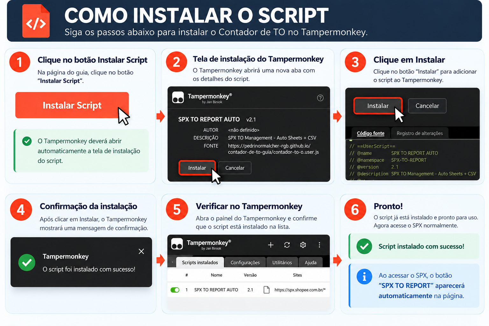
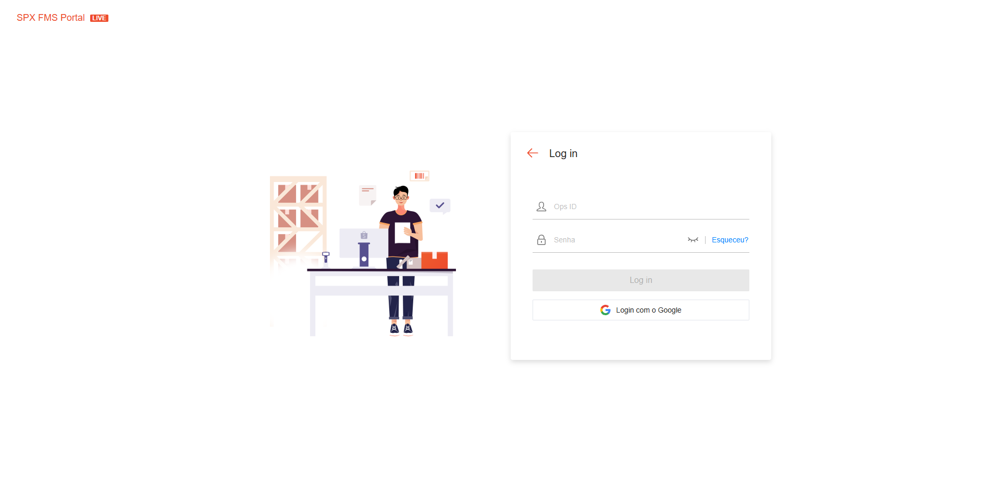
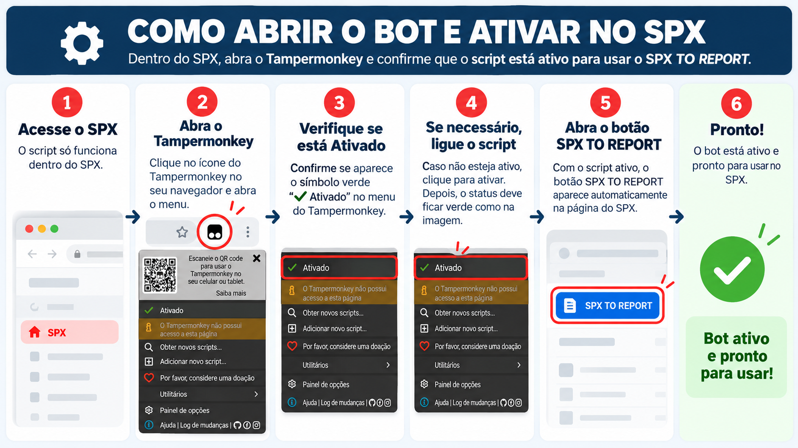
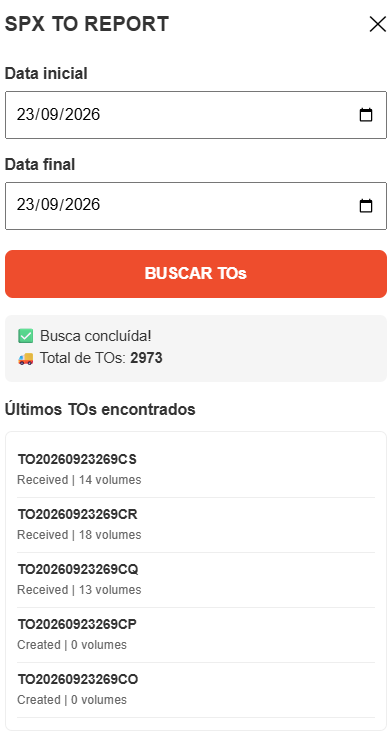

Guia completo para instalar, configurar e utilizar o bot responsável pela busca automática de TOs no SPX e envio dos dados para o Google Sheets.
O Contador de TO utiliza a extensão Tampermonkey para executar um script diretamente no SPX. Depois de instalado, o bot realiza a busca das TOs, contabiliza os registros e facilita a consulta das informações no processo.
Siga as etapas abaixo para instalar a extensão, liberar scripts, instalar o bot e utilizar o buscador de TOs.
O Tampermonkey é a extensão responsável por executar o script do Contador de TO no navegador.
Clique no botão abaixo para abrir a página oficial da extensão na Chrome Web Store.
Download da Extensão
Depois de instalar o Tampermonkey, é necessário liberar a execução de scripts de usuário no Chrome.

Agora que o Tampermonkey está instalado e configurado, você pode instalar o Contador de TO.
Clique no botão abaixo:
Instalar ScriptNa tela do Tampermonkey, clique em Instalar.

Depois de instalar o script, acesse o SPX normalmente.
Faça login com seu Ops ID ou com o Google.
O script foi configurado para funcionar dentro do ambiente SPX.
Abrir SPX
Dentro do SPX, abra o Tampermonkey e confirme se o script está ativo.
Quando o script estiver ativo, o botão SPX TO REPORT aparecerá no sistema.

Com o painel aberto, selecione a data inicial e a data final.
Depois clique no botão BUSCAR TOs.
O sistema realizará a busca automática e exibirá:

Após concluir todas as etapas, o Contador de TO estará pronto para uso. Sempre que necessário, basta abrir o SPX, acessar o painel SPX TO REPORT e realizar a busca das TOs.